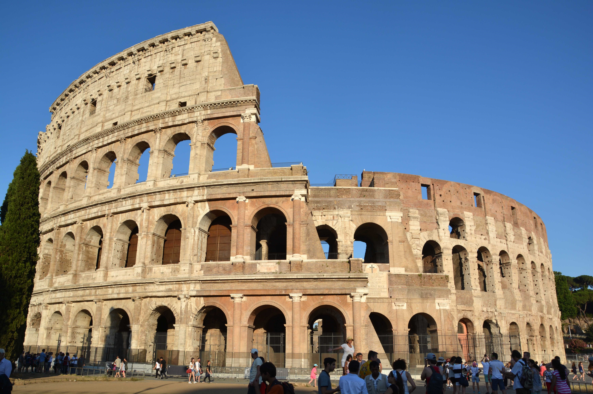
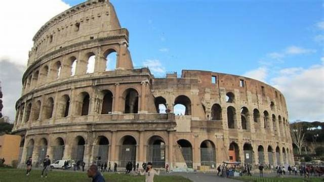

Kolizey (italyancha: Colosseo; asl nomi: Flaviy Amfiteatri) Italiya poytaxti Rimning markazida joylashgan elliptik amfiteatrdir. Kolizey Rim Imperiyasi paytida (milodiy 72-80-yillarda), imperator Vespasian, keyin esa Tit Flaviy tomonidan qurdirilgan. Rim meʼmorchiligi va muhandisligi namunasi hisoblanadi. Zilzila va qaroqchilik tufayli koʻp qismi buzilib ketgan.
Kolizey, Kolossey (lotincha colosscus — ulkan) — Qad. Rimdagi meʼmoriy yodgorlik (milodiy 75—80 yillar). Imperator Tit qurdirgan. Keyinchalik Flaviy amfiteatr nomi bilan mashhur boʻlgan. K. balandligi 57 m, tarhi ellips shaklida (524 m). 4 qatlamli oʻrindiqqa 50 ming tomoshabin joylashgan.
Sahna tagida hayvonlar qafasi, omborxona boʻlgan. Imperator oʻrindigʻi sahna bilan teng (balandligi 3,5 m) boʻlgan. 1-qatlamda imperatorning yaqinlari, 2-qatlamda yuqori tabaqali kishilar, 3 va 4 qatlamda oddiy xalq oʻtirgan.
Oʻrindiklar toshdan ishlangan, galereyalarining konstruksiyalari beton va gʻisht bilan mustahkamlangan. Kolizeyning ulugʻvor old tomoni 4 qavatli, har biri 80 ta ravoqlar qatori bilan jozibador ishlangan, pastki qismidan tomoshabinlar kirish va chiqishda foydalanganlar.
Kolizey markazidagi sahnada bayram marosimlari, qurbonlik, gladiatorlar jangi, teatr tomoshalari oʻtkazilgan.
Yunonistonda taxminan miloddan avvalgi 300 yilda barpo etilgan Afinadagi Dionis K.iga 20.000, Epidavr K.iga 14000, Delfa K.iga 5000 tomoshabin joylashgan. Kolizeyda 8—9 soatda 3 tragediya va 1 satira asari qoʻyilgan.
